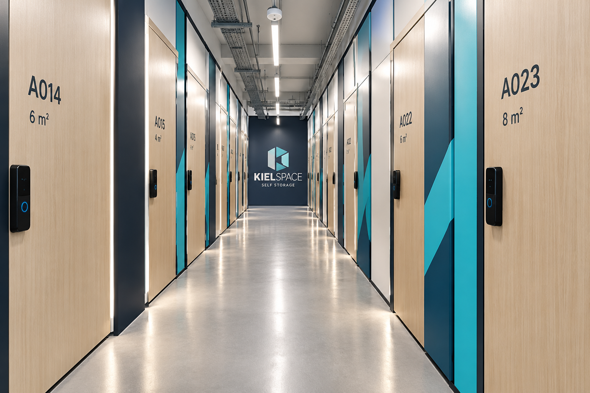
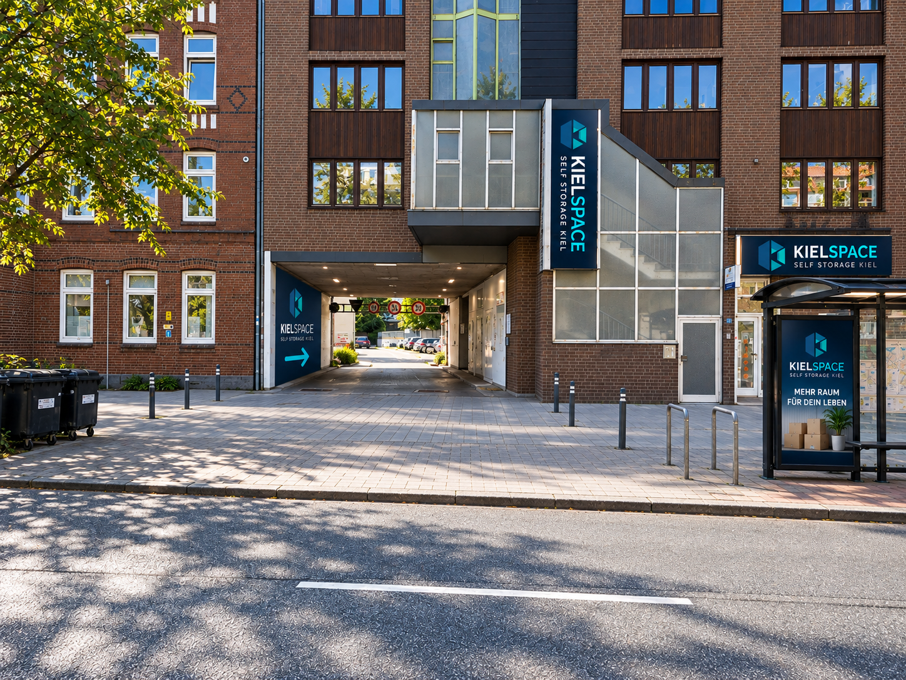

Größe wählenFein abgestufte Räume statt pauschaler Kategorien.
SELF STORAGE · ECKERNFÖRDER STRASSE · KIEL
Mehr Raum.
Mehr Freiheit.
Self Storage an der Eckernförder Straße – sicher, digital, transparent und mit klarer Wegführung direkt zum Eingang.
24/7Zugang
digitalZutritt & Buchung
videoüberwachte Bereiche
direktanliefern
KIELSPACE DIGITAL24/7 · sicher · transparent
KONZEPTVISUALISIERUNG DER EINGANGSSITUATION
Online abschließenPreis, Vertrag und Zugang digital.
Bequem einlagernParken, entladen, transportieren.
KIELSPACE FAIRNESS-PRINZIP
Vor der Buchung weißt du, was du bekommst.
Wir übernehmen die starken Standards des Marktes – und machen die Stellen besser, an denen Self Storage heute oft unnötig kompliziert wird.
EINFACH PASSEND
Wie viel Raum brauchst du?
Vom Kellerersatz bis zum Firmenlager. Die Preisbeispiele sind Planpreise für den Prototyp und werden vor dem Livegang finalisiert.
GRÖSSENBERATER
Lieber passend als unnötig groß.
Wähle deinen Anlass. Später verbinden wir diese Logik direkt mit real verfügbaren Räumen.
Wähle einen Anlass – wir zeigen dir eine sinnvolle Startgröße.
* unverbindlicher Planpreis im Designprototyp, keine Live-Verfügbarkeit.
KIELSPACE ERLEBEN
Kein Kellergefühl.
Ein professionelles Raumprodukt.
Die Innenwelt wird bewusst als Teil der Marke gedacht: helle Wege, klare Orientierung, saubere Fronten und eine Farbwelt, die sich später mit den Herstellern real umsetzen lässt.
klare Wegeführungbeleuchtete Orientierungsaubere BoxenfrontenMarkenfarben im Objekt

NICHT NUR LAGERN
Self Storage, wie es heute sein sollte.
Sicherheit, Komfort, digitale Prozesse und transparente Konditionen werden als ein zusammenhängendes System gedacht.
24
24/7 Zugang
Unabhängig von klassischen Bürozeiten auf den eigenen Lagerraum zugreifen.
◎
Digitaler Zutritt
Individuelle Berechtigung statt unkontrolliertem Publikumsverkehr.
◉
Videoüberwacht
Relevante Zugangs- und Verkehrsbereiche im Sicherheitskonzept.
↕
Bequem anliefern
Kurze Wege und ein geplanter Lastenaufzug für sperrige Güter.
€
Preis transparent
Regulärer Preis und mögliche Zusatzleistungen klar getrennt.
▦
Viele Größen
Feine Staffelung statt weniger pauschaler Raumkategorien.
✓
Sauber & trocken
Professionelles Indoor-Konzept statt einfacher Kellerlösung.
+
Versicherung optional
Eine Zusatzversicherung soll nach finaler Abstimmung angeboten werden.

ANLIEFERUNG OHNE UMWEGE
Parken. Entladen. Hoch.
Ein Schwerpunkt des Projekts ist die komfortable Logistik. Die Hauptanlieferung wird über den Parkbereich gedacht; der geplante Lastenaufzug soll auch Möbel und sperrige Güter direkt zum Self-Storage-Bereich bringen.
01Anfahrendirekt zum Park- und Anlieferbereich
02Entladenkurze Wege statt Straßenrandlogistik
03TransportierenRollwagen und Lastenaufzug geplant
04Einlagerndirekt bis zum eigenen Raum
FÜR DEIN LEBEN. FÜR DEIN BUSINESS.
Ein System, viele Situationen.
KIELSPACE denkt nicht nur in Quadratmetern, sondern in konkreten Anlässen.
Platz, wenn sich dein Leben verändert.
- Umzug & Zwischenlager
- Renovierung
- Kellerersatz
- Sport & Saison
- Nachlass & Haushalt
Flexibler Raum ohne langfristige Gewerbemiete.
- Akten & Archiv
- Waren & Ersatzteile
- Messe- und Eventmaterial
- Werkzeug & Ausrüstung
- Saisonale Bestände
VOM SMARTPHONE ZUM LAGERRAUM
In wenigen Minuten zu deinem eigenen Raum.
Raum auswählen, reale Verfügbarkeit prüfen, Mietbeginn festlegen, Vertrag digital abschließen und Zugang erhalten – ohne unnötige Medienbrüche.
1Raum wählenGröße, Preis und Verfügbarkeit vergleichen.
2Mietbeginn festlegenStarttermin auswählen.
3Digital abschließenKundendaten, Vertrag und Zahlung.
4Zugang erhaltenDirekt zum gebuchten Lagerraum.
KIELSPACE
Hallo Kiel 👋
Was möchtest du einlagern?
PrivatUmzug · Keller · Saison→
BusinessWaren · Archiv · Material→

KURZE WEGE. EINFACH ANKOMMEN.
KIELSPACE an der
Eckernförder Straße.
Damit man uns sofort findet, zeigen wir hier bewusst die Eingangssituation an der Straßenseite. Der Standort liegt an der Eckernförder Straße 85–87 in Kiel; online kann später direkt ein Routenplaner bzw. Google Maps aufgerufen werden.
KIELinnerstädtische Lage
klarsichtbare Eingangssituation
direktRoutenplanung möglich
HÄUFIGE FRAGEN
Alles Wichtige vor der Buchung.
Die FAQ wird mit den finalen Vertrags-, Versicherungs- und Systemdaten synchronisiert, sobald diese feststehen.
Wann kann ich an meinen Lagerraum?+
KIELSPACE ist mit 24/7-Zugang geplant. Damit soll dein eigener Lagerraum unabhängig von klassischen Bürozeiten erreichbar sein.
Wie sicher ist KIELSPACE?+
Geplant sind kontrollierter digitaler Zutritt und Videoüberwachung der relevanten Verkehrs- und Zugangsbereiche.
Wie finde ich die richtige Lagergröße?+
Über den Größenberater kannst du deinen Bedarf nach Anlass, Hausrat, Kartons oder gewerblichem Bestand einordnen.
Kann ich sperrige Gegenstände anliefern?+
Ja. Ein geplanter Lastenaufzug vom Parkbereich soll auch Möbel und sperrige Güter komfortabel zum Lagerbereich bringen.
Kann ich komplett online buchen?+
Das Ziel ist ein durchgängiger digitaler Prozess von der Auswahl bis zum Zugang.
Sind meine eingelagerten Sachen versichert?+
Eine optionale Versicherungslösung ist vorgesehen. Umfang und Preis werden nach finaler Abstimmung veröffentlicht.
Gibt es versteckte Zusatzkosten?+
Verpflichtende Kosten sollen vor Eingabe persönlicher Daten transparent ausgewiesen werden.
Wie lange muss ich mieten?+
Mindestmietdauer, Kündigungsfrist und Abrechnungsmodell werden vor Buchungsstart final festgelegt und transparent angezeigt.
KIELSPACE STARTET IN KIEL
Mehr Platz beginnt hier.
Der Buchungsstart folgt. Der Prototyp zeigt bereits das geplante Kundenerlebnis – Preise und Verfügbarkeiten werden später live angebunden.